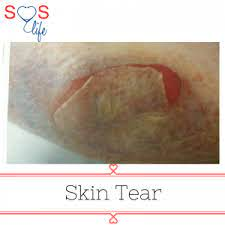
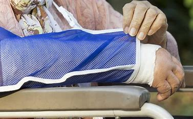

CLINIC
Disclaimer: Our clinic only contains a minor health problems.
Abrasions
(click the image below)
An abrasion means that the surface layers of the skin (epidermis) has been broken. Thin-skinned bony areas (like knees, ankles and elbows) are more prone to abrasions than thicker, more padded areas. The scraped skin of an abrasion can contain particles of dirt.
Tips for treating skin abrasions are:
Procedures 1: Clean and wash your hands.
Procedures 2: Rinse and clean the abrasion.
Procedures 3: Apply a thin layer of petroleum jelly or antibiotic ointment.
Procedures 4: Protect and cover the abrasion.
Procedures 5: Change the dressing.
Procedures 6: Do not pick scabs.
Procedures 7: Check for signs of infection.
Procedures 8: If an infection is present, antibiotics may be necessary to treat the injury.
Signs of infection include:
The wound is still not appearing to heal or has gotten worse, despite a few days of proper care Increasing amounts of pain The abrasion or the area surrounding it continues to remain warm, swollen or red Fever Pus, drainage or other discharge coming from the abrasion
Bites and Sting
(click the image below)
Most insect bites and stings are mild and can be treated at home. They might cause itching, swelling and stinging that go away in a day or two. Some bites or stings can transmit disease-causing bacteria, viruses or parasites. Stings from bees, yellow jackets, wasps, hornets and fire ants might cause a severe allergic reaction (anaphylaxis).
For mild reactions:
Procedures 1: Move to a safe area to avoid more bites or stings.
Procedures 2: Remove any stingers.
Procedures 3: Gently wash the area with soap and water.
Procedures 4: Apply a cloth dampened with cold water or filled with ice to the area of the bite or sting for 10 to 20 minutes. This helps reduce pain and swelling
Procedures 5: If the injury is on an arm or leg, raise it
Procedures 6: Apply to the affected area calamine lotion, baking soda paste, or 0.5% or 1% hydrocortisone cream. Do this several times a day until your symptoms go away.
Procedures 7: Take an anti-itch medicine (antihistamine) by mouth to reduce itching. Options include nonprescription cetirizine, fexofenadine (Allegra Allergy, Children's Allegra Allergy), loratadine (Claritin).
Procedures 8: Take a nonprescription pain reliever as needed.
Seek medical care if the swelling gets worse, the site shows signs of infection or you don't feel well
Blisters
(click the image below)

Blisters are small pockets of fluid that usually form in the upper layers of skin after it's been damaged. Blisters can develop anywhere on the body but are most common on the hands and feet. Fluid collects under the damaged skin, cushioning the tissue underneath
How to treat Blisters:
Procedures 1: Cover the blister. Loosely cover the blister with a bandage. Bring in the sides of the bandage so that the middle of the bandage is a little raised.
Procedures 2: Use padding. To protect blisters in pressure areas, such as the bottom of your feet, use padding. Cut the padding into a donut shape with a hole in the middle and place it around the blister. Then, cover the blister and padding with a bandage.
Procedures 3: Avoid popping or draining a blister, as this could lead to infection. However, if your blister is large and very painful, it may be necessary to drain the blister to reduce discomfort. To do this, sterilize a small needle using rubbing alcohol. Then, use the needle to carefully pierce one edge of the blister, which will allow some of the fluid to drain.
Procedures 4: Keep the area clean and covered. Once your blister has drained, wash the area with soap and water and apply petroleum jelly. Do not remove the “roof” of the blister, as this will protect the raw skin underneath as it heals.
Electrical Burn
(click the image below)
Burns due to external heat sources which raise the temperature of the skin and tissues and cause tissue cell death or charring. Hot metals, scalding liquids, steam, and flames, when coming in contact with the skin, can cause thermal burns.
How is an electrical burn treated?
Treatment depends on the type of skin burn you have and how serious it is.
Procedures 1: Cool the burn - You can put a cool cloth on your burn or soak it in cool water. Do not put ice on a burn.
Procedures 2: Cover the burn with a clean bandage - Your doctor might also recommend or prescribe a cream or ointment to soothe the skin or prevent an infection.
Procedures 3: Treat the pain - To ease your pain, you can raise the burned part of your body above the level of your heart. For example, you can prop your foot or leg up on pillows. You can also take an over-the-counter pain medicine, such as acetaminophen (sample brand name: Tylenol) or ibuprofen (sample brand names: Advil, Motrin).
Procedures 4: Get a tetanus shot, if it has been too many years since your last one.
A severe skin burn is usually treated in the hospital. Treatments can include:
●Strong pain medicines
●Antibiotic and other types of creams or ointments
●Surgery to repair the burned area
Your doctor will also treat any problems you have from damage to internal organs.
●Cool the burn - You can put a cool cloth on your burn or soak it in cool water. Do not put ice on a burn.
●Cover the burn with a clean bandage - Your doctor might also recommend or prescribe a cream or ointment to soothe the skin or prevent an infection.
●Treat the pain - To ease your pain, you can raise the burned part of your body above the level of your heart. For example, you can prop your foot or leg up on pillows. You can also take an over-the-counter pain medicine, such as acetaminophen (sample brand name: Tylenol) or ibuprofen (sample brand names: Advil, Motrin).
●Get a tetanus shot, if it has been too many years since your last one.
A severe skin burn is usually treated in the hospital. Treatments can include:
●Strong pain medicines
●Special bandages
●Antibiotic and other types of creams or ointments
●Surgery to repair the burned area
Your doctor will also treat any problems you have from damage to internal organs.
Contusion
A contusion, or bruise, is caused by a direct blow to the body that can cause damage to the surface of the skin and to deeper tissues as well depending on the severity of the blow.
Tips for treating skin contusion are:
How to treat Contusion:
Procedures 1: Rest. Protect the injured area from further harm by stopping play. You may also use a protective device (i.e., crutches, sling).
Procedures 2: Ice. Use cold packs for 20 minutes at a time, several times a day. Do not apply ice directly on the skin..
Procedures 3: Compression. Lightly wrap the injured area in a soft bandage or ace wrap
Procedures 4: Elevation. Raise the injured area to a level above the heart.
Most athletes with contusions get better quickly with simple treatment measures. Your doctor may give you nonsteroidal anti-inflammatory drugs (NSAIDs), such as ibuprofen, or other medications for pain relief. Do not massage the injured area.
During the first 24 to 48 hours after injury (acute phase), you will probably need to continue using rest, ice, compression bandages, and elevation of the injured area to control bleeding, swelling, and pain. While the injured muscle heals, be sure to keep exercising the uninjured parts of your body to maintain your overall level of fitness.
If there is a large hematoma that does not go away within several days, your doctor may drain it surgically to expedite healing.
Laceration
A laceration can be anything from a small, minor scrape to a deep, bleeding cut. In a laceration, none of the skin is missing; it's just separated. While some lacerations can seem minor, they may become serious if not treated properly and promptly.
First aid for Laceration:
You should call emergency hotline immediately if:
Procedures 1: A cut is bleeding severely.
Procedures 2: Blood is spurting out.
Procedures 3: Bleeding can't be stopped after 10 minutes of firm and steady pressure.
At home treatment of Laceration:
Procedures 1: Stop the flow of blood by applying firm pressure to the laceration with a clean cloth or gauze. A small amount of blood is advantageous in cleansing the wound, but large amounts of blood loss can be dangerous.
Procedures 2: Properly clean the wound. Remove all dirt and debris by first running cool water over the area, and then clean with a sterile cloth, warm water, and mild soap.
Procedures 3: Apply antibiotic ointment, and then cover the wound area with a sterile gauze bandage and first-aid tape.
Procedures 4: For a minor laceration, remove the bandage after a couple of days to promote healing.
Procedures 5: Apply antibiotic ointment, and then cover the wound area with a sterile gauze bandage and first-aid tape.
Signs of infection include:
The wound is still not appearing to heal or has gotten worse, despite a few days of proper care Increasing amounts of pain The abrasion or the area surrounding it continues to remain warm, swollen or red Fever Pus, drainage or other discharge coming from the abrasion
Puncture wounds
A puncture is a wound made by a pointed object such as a nail, knife, or sharp tooth. Puncture wounds often appear to be on the surface, but may extend into the deeper tissue layers.
Procedures 1: Wash your hands. This helps prevent infection.
Procedures 2: Stop the bleeding. Apply gentle pressure with a clean bandage or cloth.
Procedures 3: Clean the wound. Rinse the wound with clear water for 5 to 10 minutes.
Procedures 4: Apply an antibiotic.
Procedures 5: Cover the wound.
Procedures 6: Change the dressing.
Procedures 7: Watch for signs of infection.
Skin Tears
A skin tear is a wound that happens when the layers of skin separate or peel back. They can happen as a result of bumping something, dressing changes, or washing or drying the skin harshly. They most often happen on the arms or legs. Skin tears are most common in newborns, the elderly and people who are chronically ill. Long-term use of steroids can also increase the risk.
How to treat Skin tears:
Procedures 1: Clean and wash your hands.
Procedures 2: Control the bleeding.
Procedures3: Gently clean the wound with warm clean water.
Procedures 4: Gently pat dry with a clean towel.
Procedures 5: If a skin flap is still attached, try to replace it by gently rolling the skin back over the wound. Do not cut the skin flap off.
Procedures 6: Cover the wound with a clean, non-stick pad.
Procedures 7: Use a stockinette instead of adhesive dressings or tapes.
Prevention
The best way to treat skin tears is to ensure they never happen in the first place. Preventative measures to practice include:
Procedures 1: Use lotion on your arms and legs. Dry skin tears much more easily.
Procedures 2: Drink plenty of water. This will help your skin be more elastic.
Procedures 3: Make sure your home is well lit. Skin tears are often caused by bumping into your surroundings.
Procedures 4: Remove any furniture or objects that block a clear path, especially around the bed and on the way to the bathroom.
Procedures 5: Pad sharp corners of furniture with foam or folded cloth to soften the corners.
Procedures 6: Wear long sleeve shirts and pants to your protect skin.
Procedures 7: Bathe less often. Bathing too often dries the skin and makes it tear more easily.
Hematoma
A pool of mostly clotted blood that forms in an organ, tissue, or body space. A hematoma is usually caused by a broken blood vessel that was damaged by surgery or an injury
How can you care for yourself at home?
Procedures 1: Rest and protect the bruised area.
Procedures 2: Put ice or a cold pack on the area for 10 to 20 minutes at a time.
Procedures3: Prop up the bruised area on a pillow when you ice it or anytime you sit or lie down during the next 3 days. Try to keep it above the level of your heart. This will help reduce swelling.
Procedures 4: Keep the area clean and covered. Once your blister has drained, wash the area with soap and water and apply petroleum jelly. Do not remove the “roof” of the blister, as this will protect the raw skin underneath as it heals.
Procedures 5: Be safe with medicines. Read and follow all instructions on the label. If the doctor gave you a prescription medicine for pain, take it as prescribed. If you are not taking a prescription pain medicine, ask your doctor if you can take an over-the-counter medicine.
Procedures 6: Do not take two or more pain medicines at the same time unless the doctor told you to. Many pain medicines have acetaminophen, which is Tylenol. Too much acetaminophen (Tylenol) can be harmful.


Continuous Fever
Continuous fever is a type or pattern of fever in which temperature does not touch the baseline and remains above normal throughout the day. The variation between maximum and minimum temperature in 24 hours is less than 1°C (1.5°F). It usually occurs due to some infectious disease.
How to treat Continuous Fever
Procedures 1: Take paracetamol or ibuprofen in appropriate doses to help bring your temperature down.
Procedures 2: Drink plenty of fluids, particularly water.
Procedures 3: Avoid alcohol, tea and coffee as these drinks can cause slight dehydration.
Procedures 4: Sponge exposed skin with tepid water. To boost the cooling effect of evaporation, you could try standing in front of a fan.
Procedures 5: Avoid taking cold baths or showers. Skin reacts to the cold by constricting its blood vessels, which will trap body heat. The cold may also cause shivering, which can generate more heat.
Procedures 6: Make sure you have plenty of rest, including bed rest.
Hectic Fever
Hectic fevers, because of wide swings in temperature, are often associated with chills and sweats. This pattern is thought to be very suggestive of an abscess or pyogenic infection such as pyelonephritis and ascending cholangitis, but may also be seen with tuberculosis, hypernephromas, lymphomas, and drug reactions.
How to treat Remittent Fever
Procedures 1: Take paracetamol or ibuprofen in appropriate doses to help bring your temperature down.
Procedures 2: Drink plenty of fluids, particularly water. Avoid alcohol, tea and coffee as these drinks can cause slight dehydration.
Procedures 3: Sponge exposed skin with tepid water.
Procedures 4: Avoid taking cold baths or showers.
Intermittent fever
With intermittent fever, the temperature is elevated but falls to normal (37.2°C or below) each day, while in a remittent fever the temperature falls each day but not to normal. In these two patterns the amplitude of temperature change is more than 0.3°C and less than 1.4°C.
How to treat Intermittent Fever
Procedures 1: Remove some clothes
Procedures 2: Cool the room, for example, using a fan
Procedures 3: Put a cool damp cloth on the forehead
Procedures 4: Take a cool bath
Relapsing Fever
Relapsing fever is bacterial infection that can cause recurring bouts of fever, headache, muscle and joint aches, and nausea. There are three types of relapsing fever: Tick-borne relapsing fever (TBRF) Louse-borne relapsing fever (LBRF) Borrelia miyamotoi disease (sometimes called hard tick relapsing fever)
How to treat Relapsing Fever
Relapsing fever is treated with doxycycline 100 mg twice a day for seven to ten days. In pregnant women and children under eight years of age, penicillin or erythromycin are the preferred agents due to the concern of dental staining with doxycycline use.
Remittent fever

Remittent fever is a type or pattern of fever in which temperature does not touch the baseline and remains above normal throughout the day. Daily variation in temperature is more than 1°C in 24 hours, which is also the main difference as compared to continuous fever. Fever due to most infectious diseases is remittent.
How to treat Remittent Fever
Procedures 1: Take paracetamol or ibuprofen in appropriate doses to help bring your temperature down.
Procedures 2: Drink plenty of fluids, particularly water. Avoid alcohol, tea and coffee as these drinks can cause slight dehydration.
Procedures 3: Sponge exposed skin with tepid water.
Procedures 4: Avoid taking cold baths or showers.
Animal Allergy
Pet allergy is an allergic reaction to proteins found in an animal's skin cells, saliva or urine. Signs of pet allergy include those common to hay fever, such as sneezing and runny nose. Some people may also experience signs of asthma, such as wheezing and difficulty breathing.
How to treat Animal Allergy
Prescription antihistamines taken as a nasal spray include azelastine (Astelin, Astepro) and olopatadine (Patanase). Over-the-counter (OTC) antihistamine tablets include fexofenadine (Allegra Allergy), loratadine (Claritin, Alavert) and cetirizine (Zyrtec Allergy); OTC antihistamine syrups are available for children.
Drug Allergy
A drug allergy is the reaction of the immune system to a medicine. Any medicine — nonprescription, prescription or herbal — can provoke a drug allergy. However, a drug allergy is more likely with certain medicines.
How to treat Drug Allergy
Procedures 1: Antihistamines to relieve mild symptoms such as rash, hives, and itching.
Procedures 2: Bronchodilators such as albuterol to reduce asthma-like symptoms (moderate wheezing or cough)
Procedures 3: Corticosteroids applied to the skin, given by mouth, or given through a vein (intravenously)
Procedures 4: Epinephrine by injection to treat anaphylaxis.
Food Allergy
Food allergies occur when the body's immune system reacts to certain proteins in food. Food allergic reactions vary in severity from mild symptoms involving hives and lip swelling to severe, life-threatening symptoms, often called anaphylaxis, that may involve fatal respiratory problems and shock.
How to treat Food Allergy
You'll be given medicines to help manage your symptoms or use in case of an emergency. These include: antihistamines for mild allergic reactions. emergency medicines called adrenaline auto-injectors, such as an EpiPen, for severe allergic reactions.
eczema

Atopic dermatitis (eczema) is a condition that causes dry, itchy and inflamed skin. It's common in young children but can occur at any age. Atopic dermatitis is long lasting (chronic) and tends to flare sometimes. It can be irritating but it's not contagious.
STEP TO TREAT ECZEMA
Procedures :1 Avoid scratching the rash or skin.
Procedures :2 Relieve the itch by using a moisturizer or topical steroids.
Procedures :3 Keep your fingernails cut short.
Procedures :4 Lubricate or moisturize the skin two to three times a day using .
Procedures :5 ointments such as petroleum jelly.
Procedures :6 Avoid anything that worsens symptoms, including.
Pollen allergy
Hay fever, also known as allergic rhinitis, occurs when allergens like pollen enter your body and your immune system mistakenly identifies them as a threat.
Over-the-counter antihistamine medications, such as cetirizine (Zyrtec) or loratadine (Claritin). Immunotherapy tablets or shots to desensitize the body to pollen. Nasal sprays designed to relieve the itching and congestion.
Seasonal Allergy

Seasonal allergies are sometimes called "hay fever" or seasonal allergic rhinitis. These allergy symptoms happen during certain times of the year, usually when trees, grasses, and weeds release tiny pollen particles into the air to fertilize other plants.
steps
Procedures 1: Find the best allergy medicine for your symptoms.
Procedures 2: Know when to take your allergy medications.
Procedures 3: Consider nasal washing with sinus rinses.
Procedures 4: Avoid allergens when possible.
Procedures 5: Talk with your doctor about seasonal allergy testing or allergy shots.
Animal bites
An animal bite is an injury caused by the mouth and teeth of an animal (including humans). There may be bruising, deep anatomic structure disruption, introduction of infectious agents, and envenomation (injection of toxin by a bite or sting).
First Aid For Animal Bites
Procedures 1: Wash the bite area with soap and water. If the bite is bleeding, put pressure on it using sterile gauze or a clean cloth.
Procedures 2: If the bleeding has stopped, put antibiotic ointment on the area.
Procedures 3: Cover the area with a bandage or sterile gauze.
Procedures 4: If your child has pain, give acetaminophen or ibuprofen.
Bruises

A bruise forms when blood vessels under the skin break. The trapped blood creates a bruise that's black, purple or blue then changes color as it heals. You can enhance bruise healing with a few simple techniques. Elevate the bruised area above heart level, if possible.
You can enhance bruise healing with a few simple techniques.
Procedures 1: Elevate the bruised area above heart level, if possible.
Procedures 2: Apply an ice pack wrapped in a thin towel. Leave it in place for 20 minutes.
Procedures 3: If the bruised area is swelling, put an elastic bandage around it, but not too tight.
Dislocation
A dislocation is a separation of two bones where they meet at a joint. This injury can be very painful and can temporarily deform and immobilize the joint. The most common locations for a dislocation are shoulders and fingers, but can also occur in elbows, knees and hips. The cause is often a fall or a blow, sometimes from playing a contact sport.
Things to do if your bone are Dislocated
Procedures 1: RICE. This stands for rest, ice, compression, and elevation of the dislocated area.
Procedures 2: Repositioning. Sometimes the bone ends may go back into place by themselves.
Procedures 3: Splint or cast. This treatment keeps the dislocated area in place while it heals.
Procedures 4: Take some Medicine
Procedures 5: Traction
Procedures 6: Surgery.
HOW TOFractured injury
A fracture is a broken bone, the same as a crack or a break. A bone may be completely fractured or partially fractured in any number of ways (crosswise, lengthwise, in multiple pieces).
Treatment of bone fractures
Procedures 1: splints - to stop movement of the broken limb.
Procedures 2: braces - to support the bone.
Procedures 3: plaster cast to provide support and immobilise the bone.
Procedures 4: traction - a less common option.
Procedures 5: surgically inserted metal rods or plates - to hold the bone pieces together.
Procedures 6: pain relief -to reduce pain.
HOW TOSprain and strain
A sprain is an injury to the ligaments and capsule at a joint in the body. A strain is an injury to muscles or tendons. Immediate treatment of sprains or strains includes protection, optimal loading, ice, compression and elevation (POLICE).
Treatment for sprain and strain
Procedures 1. Stop your activity
Procedures 2. Rest the injured area.
Procedures 3. Put icepacks on the area for 20 minutes every 2 hours, separated from the skin by wet towelling.
Procedures 4. Compress or bandage the injured site firmly, extending the wrapping from below to above. Elevate (raise) the injured area above heart height whenever practical.
Procedures 5. Avoid heat, alcohol, running and massage of the affected area in the first 72 hours after the injury, as this can increase swelling.
Procedures 6. If symptoms get worse in the first 24 hours, see your doctor for further medical investigation.
>Migraine
A migraine is usually a moderate or severe headache felt as a throbbing pain on 1 side of the head. Many people also have symptoms such as feeling sick, being sick and increased sensitivity to light or sound.
steps
Procedures 1: Turn off the lights.
Procedures 2: Try temperature therapy
Procedures 3: ip a caffeinated drink
HOW TORebound Headache


rebound headaches — are caused by the long-term use of medicines to treat headaches such as migraines. Pain relievers offer relief for occasional headaches. But if you take them more than a couple of days a week, they may trigger headaches.
steps
Procedures 1: These are also effective steps to treat rebound headaches or any withdrawal symptoms from that process..
Procedures 2: Take pain medications according to instructions.
Procedures 3: Don't take pain medications longer than advised.
Procedures 4: Avoid extra caffeine from beverages and foods.
HOW TOContact
| Contact | Contact Number |
|---|---|
| MDRRMO/RESCUE(AKSIDENTE) | 0927-596-6550 |
| AMBULANSYA | 0915-764-2460 |
| BONGABON BFP(BUMBERO) | 0948-589-3392 |
| BONGABON PNP(PULIS) | 0927-997-3805 |
| RURAL HEALTH UNIT | 0908-178-0984 |
| DISTRICT HOSPITAL | 0999-655-7236 |
.jpg)